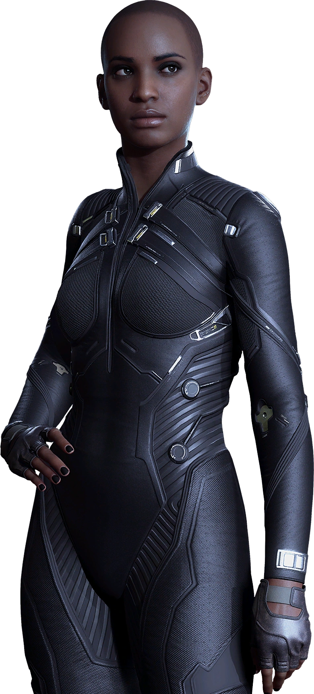

01 // HISTÓRIA
Conheça o universo, a trama geral e os personagens da história.
ARQUIVO DIGITAL // BLOG PÚBLICO
// BEM-VINDO A NIGHT CITY
Conheça Cyberpunk 2077, o jogo que foi do fracasso em seu lançaçamento ao sucesso que é hoje em dia: Explore o universo do futuro corporativo, conheça sua história, descubra suas mecânicas e mergulhe nas ruas de Night City. Quer se tornar uma lenda? Saiba que todas elas estão em um lugar: no cemitério.
Este blog reúne informações para todos aqueles que desejam conhecer melhor o mundo criado pela CD Projekt Red.
// ANTES DE JOGAR
A principal função desse blog e te apresenta alguns pontos sobre o jogo Cyberpunk 2077 e te ajudar a decidir se é ou não uma boa ideia jogar. O jogo foi lançado em 2020 e teve um lançamento conturbado, com muitos bugs e problemas de desempenho, o que gerou críticas negativas da comunidade gamer. No entanto, a CD Projekt Red trabalhou arduamente para corrigir esses problemas e lançou diversas atualizações e patches que melhoraram significativamente a experiência do jogo. Hoje em dia, Cyberpunk 2077 é considerado um jogo muito mais estável e recebe atualizações até hoje.
Conheça o universo, a trama geral e os personagens da história.

Descubra as mecânicas, implantes cibernéticos, armas e possibilidades de combate.
Explore os distritos, conheça as gangues e descubra os segredos da cidade.